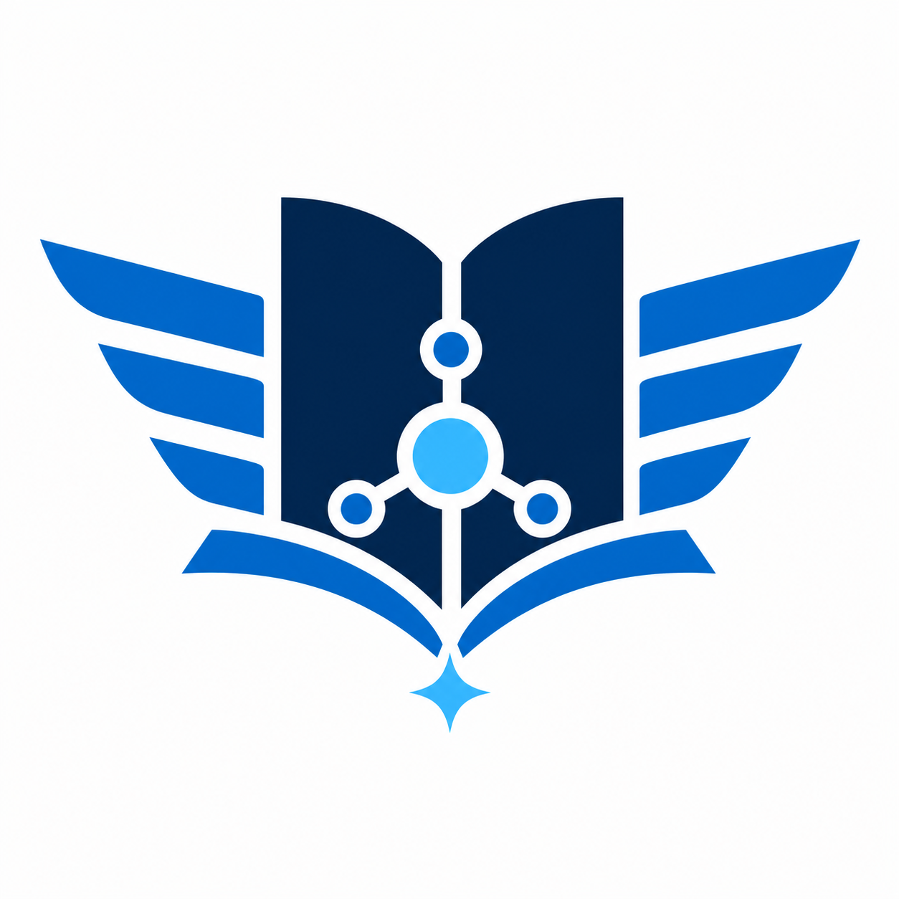
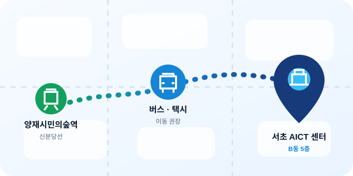

업무 의사결정 지원
AI 기반 ADTO 전투계획 작성 모델
항공우주작전 임무수행주기 단축 및 전투계획 정확성 향상을 목표로, 통합작전지침에 따른 전력 배당 추천과 작전계획 작성을 지원합니다.
- 담당
- 전발단 AI신기술융합센터

서울대·공군 AX 협력센터AI 기업을 대상으로 공군 AX 거점 구축·운영계획과 2026년 연구개발 과제를 소개하고, 후속 공동연구 및 1:1 밋업 참여를 접수합니다.
Program Timeline
2026 R&D Topics
업무 의사결정 지원
항공우주작전 임무수행주기 단축 및 전투계획 정확성 향상을 목표로, 통합작전지침에 따른 전력 배당 추천과 작전계획 작성을 지원합니다.
전투 지원 기술
탄도탄 발사 후 이동표적의 예상 경로와 위치를 식별하고 GIS 기반 예상 이동경로를 분석·시현합니다.
전투 지원 및 병력절감 기술
군 영상정보의 자동변화 탐지와 자동표적인지 기술을 적용해 통합분석 체계의 정확도와 대응 속도를 높입니다.
Roadmap & Vision
실전형 AI 인재를 양성하고 기반기술 개발, 기술사업화, 생태계 확산으로 이어지는 민군 협력 체계를 구축합니다.
공군 소요기술 기반 AI 개발, 실증 및 전력화 과정, 데이터 기반 모델 고도화, 통합 플랫폼 운영을 단계적으로 수행합니다.
데이터 저장, 가공, AI 학습·검증, 산출물 보안검토를 통제된 절차 안에서 운영합니다.
공동과제 수행을 위해 데이터 등록·활용 절차를 체계화하고, 종료 후에도 활용 가능한 공용 자산형 데이터 구조를 축적합니다.
Application
Location

행사 장소
행사장 주차공간이 협소하므로 가급적 대중교통을 이용해 주세요.